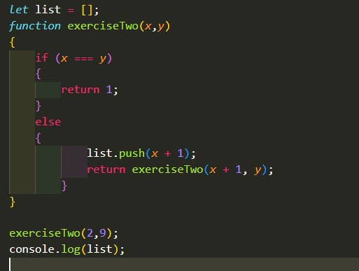

Notes:
- Functions can take objects as parameters
- The call() method can invoke the 'this' to be used in th efunction. However, if you call the function with the call method that does not have an object being used, you have to inculde null as th efirst parameter
- You can cahce info so you do not have to compute a certain vaule again
- Temporary functions can used to not pollute global variables
- IIFEs are called immediatly and can be used with page loads, objects, etc
- Recurions ae good, but make sure to have a bse case so the function knows when to stop
- A fetch method has one required argument, the data you want to bring in. You would then use a .then to tell the software what to do. Using a catch with the fetch and then is good to return to the user a message if the server has an error.
- The redirect method can redirect you to another URL and give you a new promise. The method is not suppoted in any browser
- The json() method returns a JSON file that has been converted into a javascript object
- The Headers have information about the file. Use the has() to see if header has certian arguments.
Questions:
Exercises:
Reading Ajax Example:
Exercise 1: Recursion Exercise
THis exercise is simply experimenting with recursion. I did a program that calculates the factorial of a number. You can see the code under week7 under the js folder in the exeecise javascript file.

Exercise 2: Recursion Exercise 2
THis exercise is simply experimenting with recursion. This exercise figures out what numbers need to go between a certain range. You can see the code under week7 under the js folder in the exeecise javascript file.
